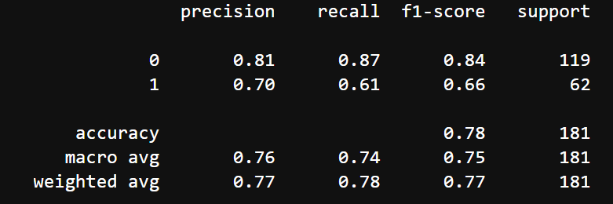

The Logistic Regression Classification Model
Although the classification model with the highest weighted average F1-Score was tied between the Gradient Boosting Classification model
and the Logistic Regression model, the model chosen for this machine learning tool was the latter. Although this model had the same F1-Score of 0.77 and precision ratio of 0.61
as the Gradient Boosting Classification model, the accuracy and precision are just slightly better.
Based on this confusion matrix comparing the predicted and actual values of the Decision Tree Classification machine learning model,
it is apparent that the model created is relatively accurate; when you take all true postive and true negative predictions and divide them by the total observations,
you get about 0.78, which is the highest out of all four models created and tested.
The high precision rate leads to a similar conclusion; about 70% of positive predictions ended up being correct,proving that it does have a good level of precision.

Following that, this model has a recall ratio of 0.61, which, because it is above 50%, isn't too bad. This shows that
the model has a 61% chance of correctly predicting positive observations compared to the total number of actual positive observations.
Lastly, when you look at the F1-Score, which is the weighted average of the precision and recall of the model, it is evident that the previous
observations are further confirmed. With a weighted average F1-score of 0.77, it is safe to say that this model could be reliable for predicting diabetes,
but is not as reliable as the Gradient Booster Classification method.